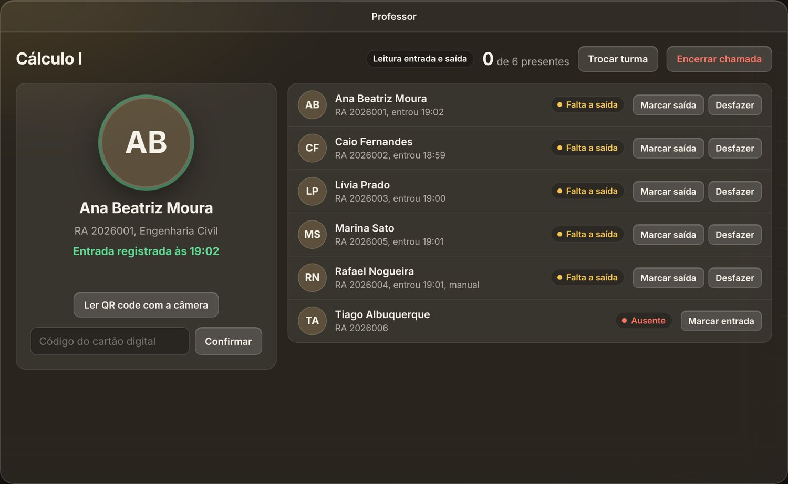
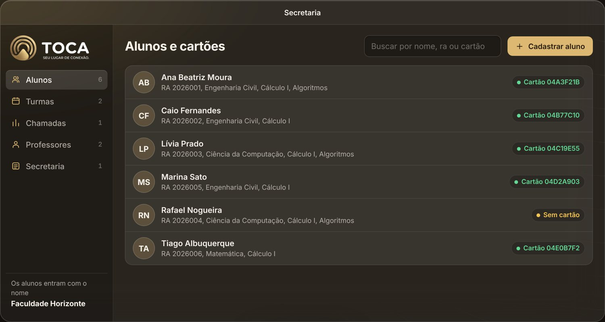
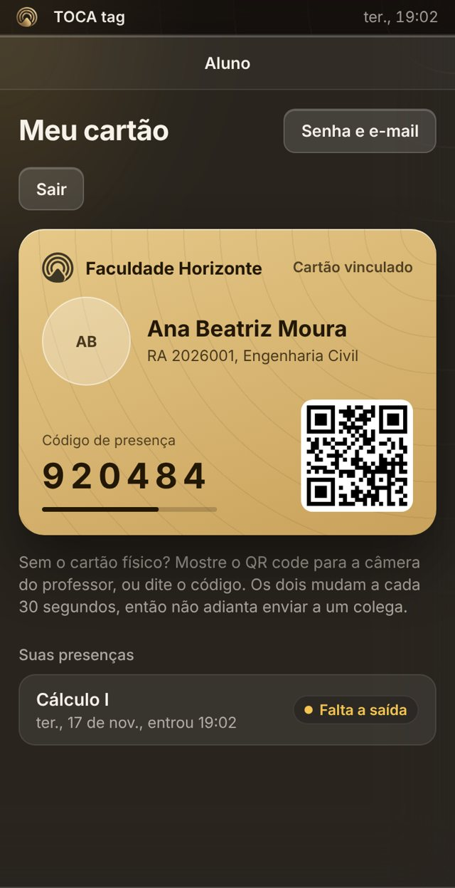

O aluno encosta o cartão. A presença está feita.
TOCA tag é a chamada por cartão NFC para faculdades e escolas. A cada leitura, a tela do professor mostra a foto e o nome de quem passou.
TOCA tag é a chamada por cartão NFC para faculdades e escolas. A cada leitura, a tela do professor mostra a foto e o nome de quem passou.

Alunos, turmas e chamadas ficam salvos na nuvem, e todos os aparelhos veem os mesmos dados.

A secretaria cuida de alunos, cartões, turmas e dos logins dos professores. Cada instituição vê só os próprios dados.

O aluno entra com o nome da instituição, a matrícula e a senha dele. No cartão ficam o código e o QR code de presença, e o histórico das aulas.
Cada turma tem um padrão, e o professor pode trocar ao iniciar qualquer chamada.
| Modo | O aluno encosta o cartão | Conta presença |
|---|---|---|
| Na entrada | Uma vez, ao chegar | Com a leitura da chegada |
| Na saída | Uma vez, ao sair | Só para quem ficou até o fim e leu o cartão na saída |
| Entrada e saída | Duas vezes, ao chegar e ao sair | Com as duas leituras |